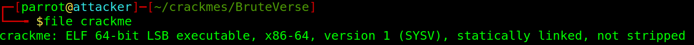
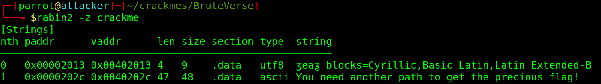
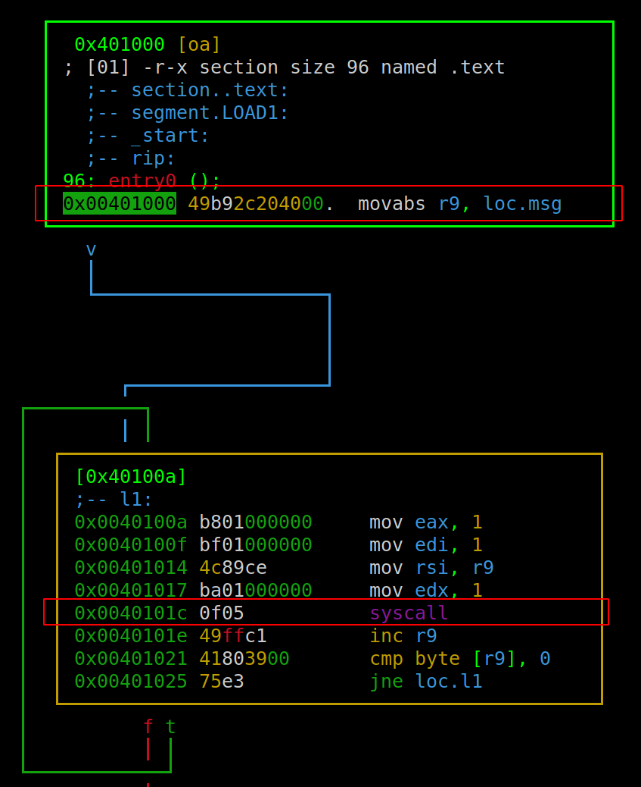
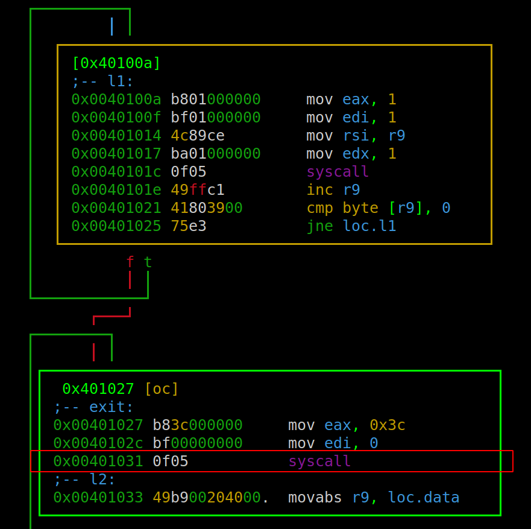
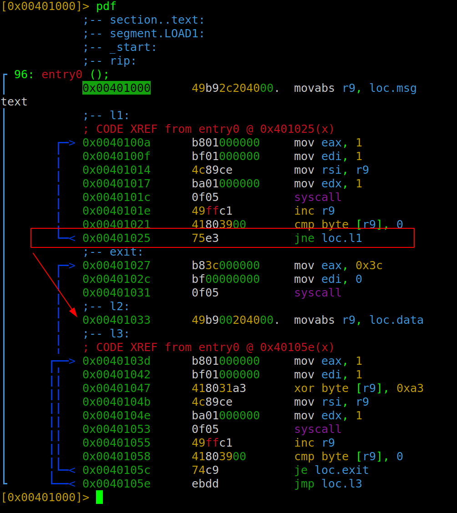
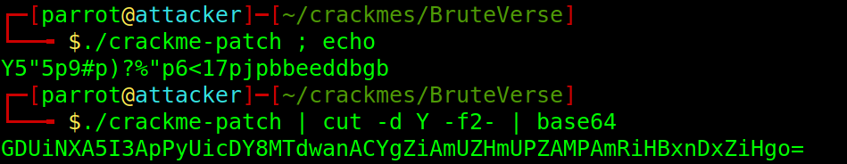

Crackme 0x00 - BruteVerse: Análise estática com radare2
Published on
Introdução
Como toda pessoa que atua com engenharia reversa, sempre senti vontade de aprofundar meus conhecimentos no framework radare2, e talvez utilizá-lo como framework padrão para minhas análises e CTFs. Por esse motivo, resolvi esse crackme, chamado BruteVerse, postado no site crackmes.one utilizando o radare2. Esse post também dará início a uma série de postagens de resolução de CTFs.
A quem interessar, o link para o desafio está aqui. Créditos para o ThePhilosopher, por ter criado e postado o desafio.
Primeiras impressões
A análise do comando file informa que o binário trata-se de um ELF de 64 bits, para Linux e com símbolos de debugging (not stripped). Além disso, o próprio criador do desafio informou na plataforma crackmes.one que a linguagem utilizada para criação foi o Assembly.

Mesmo em casos nos quais não há informações do programador com relação ao uso de linguagem de montagem diretamente, é possível suspeitar do uso de Assembly para criação de um software, especialmente desafios de CTF, devido ao tamanho do binário gerado, como indicado na imagem abaixo. Assembly gera um código enxuto, no qual cada mnemônico é traduzido para um código de máquina específico.

Um outro ponto é importante verificar são as cadeias de caracteres (strings) que estão contidas em um binário. Existem diversas codificações para strings - ASCII, UTF8, entre outras - e as mais comuns podem ser identificadas com o uso do argumento -z no binário rabin2. Abaixo, podemos verificar que nesse desafio consta apenas uma string interessante em texto plano no endereço virtual 0x0040202c.

Outro ponto importante de binários pequenos e not stripped são os símbolos, que tratam-se de um mapeamento de strings legíveis para certos endereços de memória. Símbolos podem referenciar endereços de variáveis globais, endereços de funções, entre outras informações contidas nos binários ELF.
No desafio, é possível encontrar certos símbolos locais interessantes. Por exemplo, os símbolos “msg” e “data” sugerem dados que poderão sofrer interação por alguma função, como escrever na tela ou descriptografar.
Já os símbolos l1, l2, l3 e exit sugerem referências a determinado endereços de código.

Tendo em vista essas informações iniciais, vamos executar o programa.
Na execução, não é pedido nenhuma entrada do usuário e o programa simplesmente escreve na tela a frase “You need another path to get the precious flag!”, terminando logo em seguida.

Já estando na shell do radare2, após uma análise profunda do arquivo com o comando aaa, é possível buscar funções na flagspace “functions”. Nenhuma função identificada na análise é retornada, logo o binário não têm funções definidas.

Buscando por cross references da string “You need another path to get the precious flag!”, com o comando axt, é retornado apenas uma referência para a entry0, que é o entrypoint do binário ELF. Logo, devemos analisá-lo para entender o fluxo de execução do desafio.

O poder da análise estática com radare2
Após realizar um seek para o endereço do entrypoint (s entry0) e entrar no modo visual com VV, foi possível identificar três conjuntos de blocos de códigos que chamam syscalls. Eles são fundamentais para entender o funcionamento do binário.
Primeiro bloco

Nesse bloco, é possível perceber que o número da syscall, identificado por RAX, é o valor 1, que se traduz para a syscall write. Seus argumentos são:
RDI = File Descriptor
RSI = Buffer a ser escrito no File Descriptor
RDX = Quantidade de bytes a serem escritos
Analisando o bloco, sabemos que RDI tem valor 1, ou stdout, RDX tem valor 1 e RSI recebe o valor guardado em R9. O valor de R9 é modificado pela última vez no endereço 0x00401000, pela instrução movabs, atribuindo um ponteiro para loc.msg. Isso efetivamente está escrevendo em stdout um byte de loc.msg. Na imagem abaixo está o valor apontado por loc.msg:

Logo após a syscall, o ponteiro de R9 é incrementado e há uma comparação em 0x00401021 para verificar se o valor apontado por R9 é nulo. Caso negativo, o RIP apontará para o início do loop l1, em 0x0040100a, escrevendo o próximo byte de loc.msg na tela.
Segundo bloco

Esse segundo bloco, que começa em 0x00401031 (loc.data) é executada logo após o loop l1. A syscall 0x3c, junto com o valor 0 em RDI, se traduz para exit(0). Isso efetivamente irá fazer com que o programa termine sua execução. No entanto, logo após a chamada da syscall, há o início do label l2, carregando o valor de loc.data no registrador R9. Note que esse código nunca será executado normalmente.
Terceiro bloco

O terceiro bloco começa no endereço 0x00401033, ou l2, movendo o o valor de loc.data para o registrador R9.
Logo após, há a chamada da syscall write, só que dessa vez, para o byte apontado por R9. Note que o valor apontado por R9 é modificado por um XOR com 0xa3, no endereço 0x00401047.
Após a execução da syscall, o ponteiro de R9 é incrementado e há uma comparação com o valor do byte apontado por R9 com 0. Caso seja positivo, a execução será redirecionada para loc.exit, ou seja, o segundo bloco, que irá terminar o programa.
Caso negativo, o próximo valor de R9 será escrito em stdout. Com o comando px, é possível verificar os bytes que estão em loc.data, conforme imagem abaixo.

Patching e resolução
Uma forma de resolução simples desse desafio é realizar um binary patching no arquivo. Podemos alterar o valor do endereço na instrução JNE em 0x00401025 para pular para l2 (0x00401033). Para isso, devemos obedecer as condições de um jump short em x86/amd64, que deverá contabilizar a quantidade de bytes entre a instrução Jcc/JMP até o endereço especificado.
Calculando a quantidade de bytes entre o JNE até o endereço de l2, temos 0x0c bytes. Abaixo está o patching que queremos realizar.

Para aplicarmos o patch, devemos reabrir o arquivo em modo de escrita (oo+) e configurar a variável io.cache para false (e io.cache=false). Essa configuração permitirá que o radare2 escreva alterações diretamente no binário, e não em um cache.
Por fim, podemos aplicar o patch utilizando o comando wx 750c @ 0x00401025, que irá escrever a word 0x750c (JNE para 0x00401033) no endereço do JNE.

Dessa forma, a execução irá escrever a string identificada em loc.data, com XOR 0xA3, na tela. Note que da forma que foi realizado o patch, o primeiro byte da string original “You need another path to get the precious flag!” ainda será escrito na tela. Vamos levar isso em consideração ao tentar executar o arquivo.
Para isso, podemos utilizar o utiltário cut para retornar apenas o valor após o ‘Y’. Note que mesmo na execução sem o cut, o valor retornado não se parece com uma flag.
Para coveniência da próxima fase, foi utilizado o utilitário base64 para codificar a string.

Como o nome do desafio é “BruteVerse”, e utilizamos uma criptografia com XOR no código, podemos pensar em testar a string obtida utilizando XOR com valores de 0x00 a 0xFF. Para isso, podemos construir um script ou utilizar o cyberchef, com as operações “From Base64” e “XOR Brute Force”.
Como mostrado na imagem abaixo, o valor 0x50 decodifica com sucesso a flag. Clique aqui para a resolução no CyberChef.

Sabendo do valor 0x50, também é possível utilizar o radare2 para escrever o valor em texto plano da flag:
- carregar o binário e analisá-lo (
aaa); - habilitar o cache (
e io.cache=true); - verificar o valor de 0x2B bytes em
loc.data, compx 0x2b @ loc.data; - realizar uma operação de XOR com 0xA3 na localização de
loc.data(wox 0xa3 @ loc.data); - verificar o valor de
loc.datanovamente, confirmando que sofreram tal operação; - realizar uma nova operação XOR em
loc.data, agora com o valor 0x50 (wox 0x50 @ loc.data); - usar
px 0x2b @ loc.datapara printar a flag.